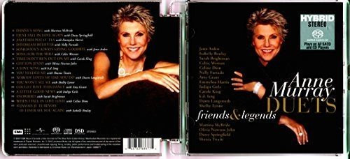

SACD
Duets: Friends & Legends
Anne Murray
Media: NM · Sleeve: NM
CA$50.00
Sold
Discogs SuggestedCA$111.98
Discogs MedianCA$111.98
Discogs HighCA$111.98
- Physical Copy ID
- BB-SACD-142
- Year
- 2016
- Label
- EMI, Universal Music Hong Kong, Manhattan Records
- Catalog #
- 5368677, 5368677, 5368677
- Country
- HKHong Kong
- Genre / Style
- Pop, Folk, World, & Country · Country, Vocal